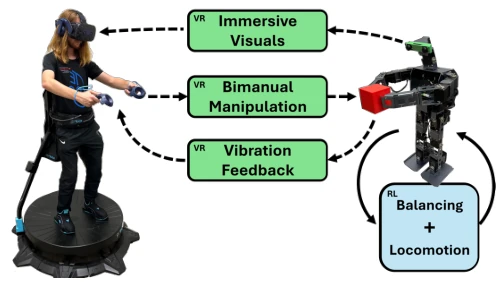
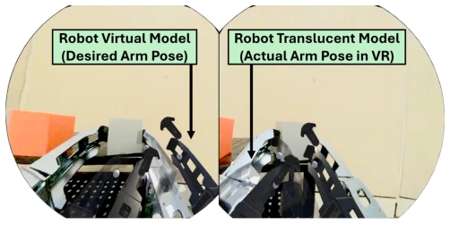
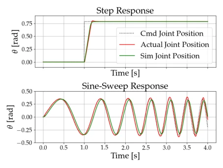
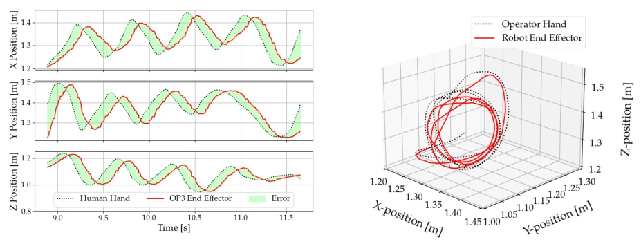
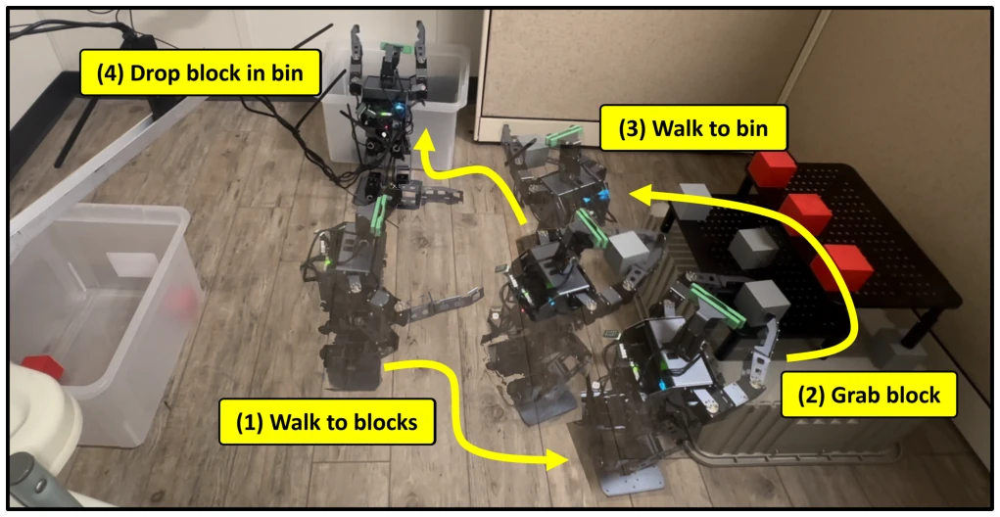
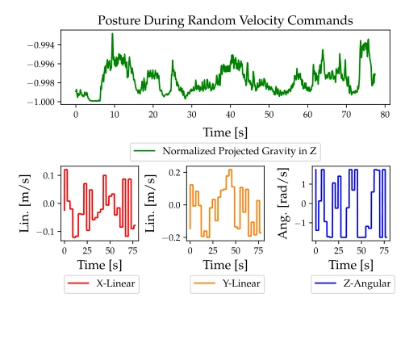

This work attempts to equip the "Poor Man's Boston Dynamics" (mini humanoid) with a VR brain and an RL cerebellum. Although decoupling the VR upper limb and RL lower limb in the architecture is a smart move that avoids the dangers of traditional rigid control, the experimental results are somewhat "disappointing": moving 2 blocks in 10 minutes, this efficiency is even found lacking by robot vacuums. Although PD control has transparent physical meaning, it is as soft as cotton candy, leading to grasping difficulties, forcing the operator to cross arms to exert force. However, running Sim2Real RL gait on low-cost hardware at least proves that miniature platforms can also perform loco-manipulation, but it is far from practical and relies heavily on extensive domain randomization to mask model errors. Furthermore, the system is sensitive to operator fatigue, and the lack of force feedback leads to low task completion rates; future work needs to improve force control and wireless power supply.
Although full-size humanoid robots are powerful, they are expensive and difficult to obtain [1], [2], leading to scarce high-quality demonstration data, hindering the development of imitation learning [3]. Mini humanoids are cheap and suitable for prototyping, but usually have few degrees of freedom and lack whole-body coordinated loco-manipulation capabilities [5]. Existing VR teleoperation mostly relies on rigid position control, with poor safety [14]-[16], while RL gait application on small platforms is also scarce. This study aims to fill this gap, providing a whole-body teleoperation framework for low-cost humanoids that can collect data, accumulating a foundation for future imitation learning. Meanwhile, through VR first-person view operation, it can better perceive robot perception shortcomings and improve generalization capabilities.

Fig. 1. Human teleoperator using the proposed tele-loco-manipulation platform to stack boxes from a distance. Green blocks are associated with VR, while blue relates to RL.
The system is divided into two parts: VR upper limb control and RL lower limb control. The VR end uses VIVE Pro 2 and Unity, mapping operator hands to robot arms via IK calculation, adopting a custom PD torque controller instead of black-box position control to increase compliance. The lower limb uses Isaac Sim to train RL policies, utilizing Domain Randomization (mass, friction, gravity, etc.) to narrow the Sim2Real gap. The Better Actuator Modeling (BAM) method is used to identify actuator parameters, verifying the feasibility of Sim2Real. The two communicate via ROS, and the operator controls lower limb speed commands via the controller. Arm control ignores joint torque feedback, relying on open-loop current control, while the neck follows the headset rotation. The observation space includes 5 items such as angular velocity, projected gravity, stacking 9 frames of history. The reward function includes velocity error, gait, foot clearance, etc., and penalty terms include action smoothness, base motion, etc.

Fig. 2. ”Operator view” of the remote environment from images streamed directly to the HMD. Additionally, the virtual (and translucent) robot models are shown in dark opaque and transparent gray.

Fig. 3. Real2Sim PD gain tuning for the robot’s actuators (Dynamixel XM430-W350). The plots compare real and simulated actuator step and sine-sweep trajectory responses.
Verified on ROBOTIS OP3. Teleoperation tests show end-to-end latency of about 220ms, RMSE about 15%. In gait tests, the robot can maintain upright posture under random speed commands, with projected gravity close to -1. In the final loco-manipulation experiment, 2/6 blocks were successfully moved within 10 minutes, walking 5 meters. Results show the system can work, but efficiency is low, mainly limited by operator fatigue, arm too soft leading to insufficient grasp force, and tethered power supply limitations.

Fig. 4. Results from telemanipulation experiments, comparing human hand to robot end effector motion. The plots on the left show transient data in the x, y, and z directions, whereas the plot on the right shows the resulting circular 3D trajectories.

Fig. 5. Snapshots from a real tele-loco-manipulation experiment trial that visually depict the act of block relocation.

Fig. 6. Humanoid robot’s projected gravity during random velocity command testing.